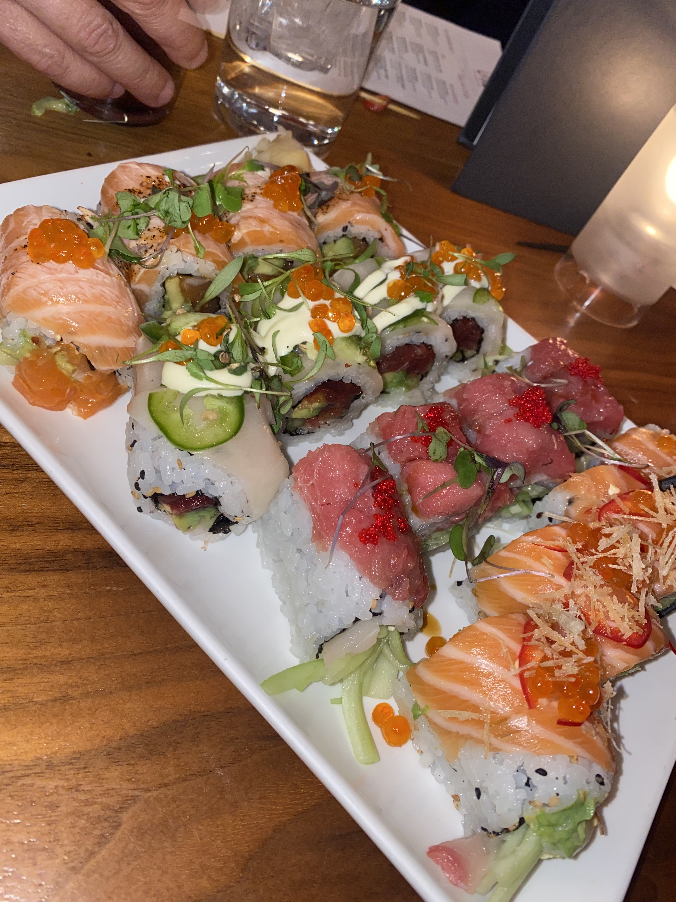
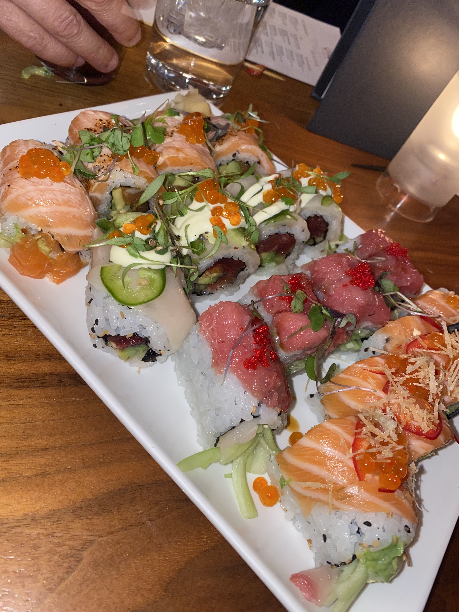
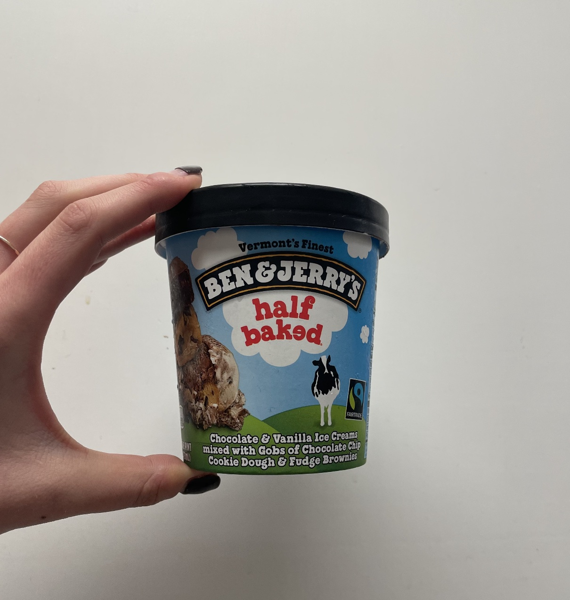
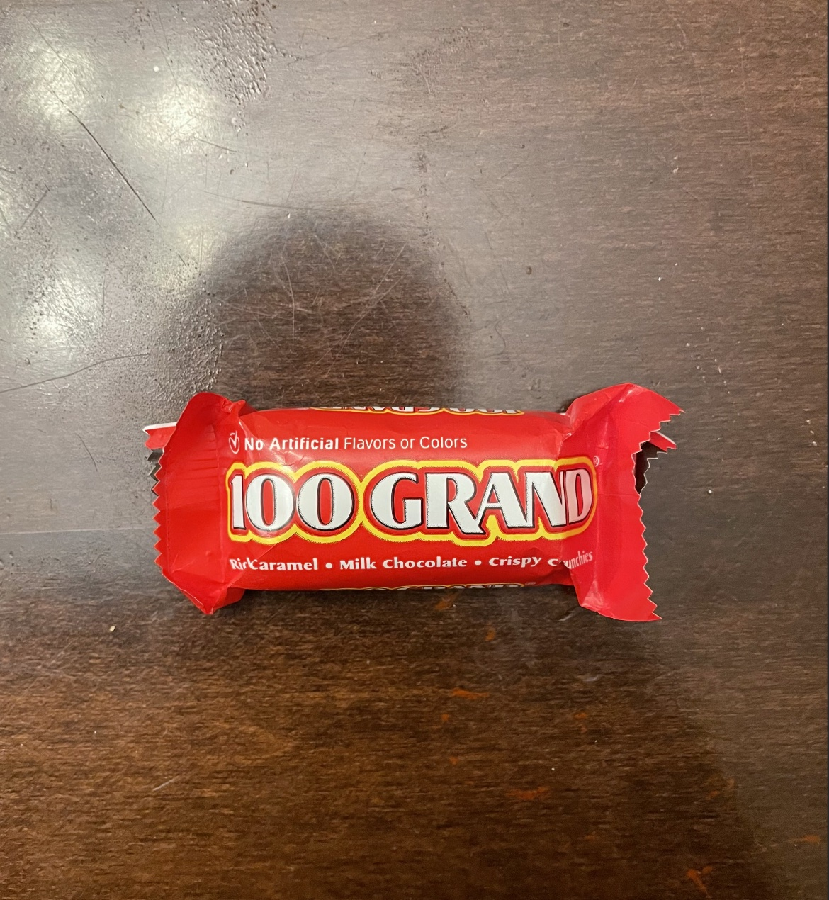
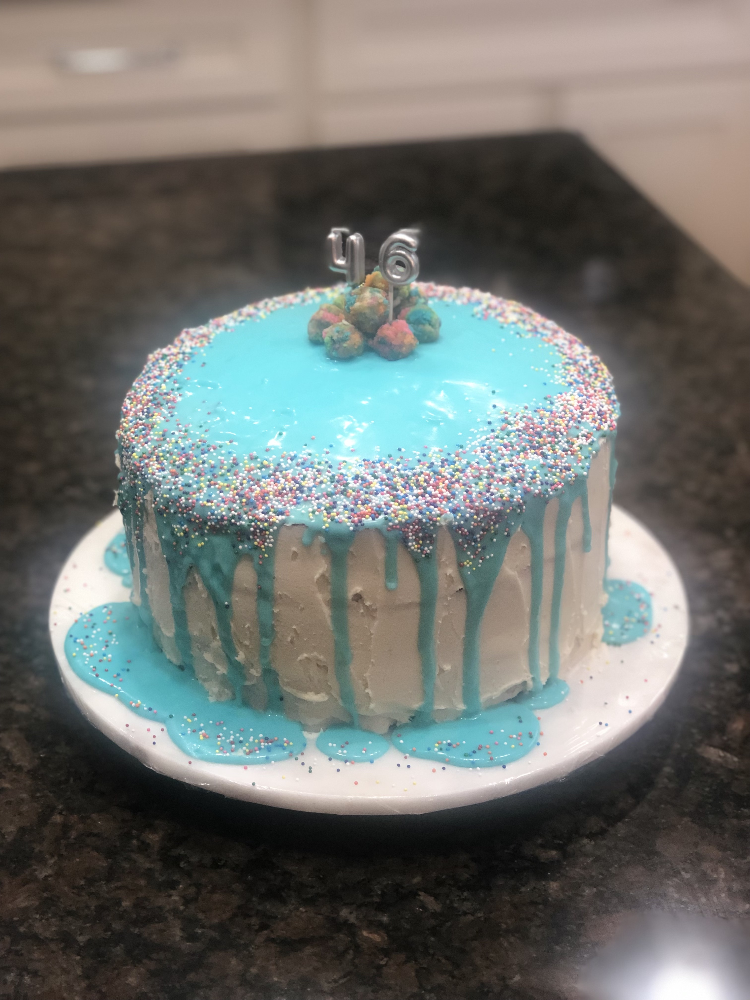
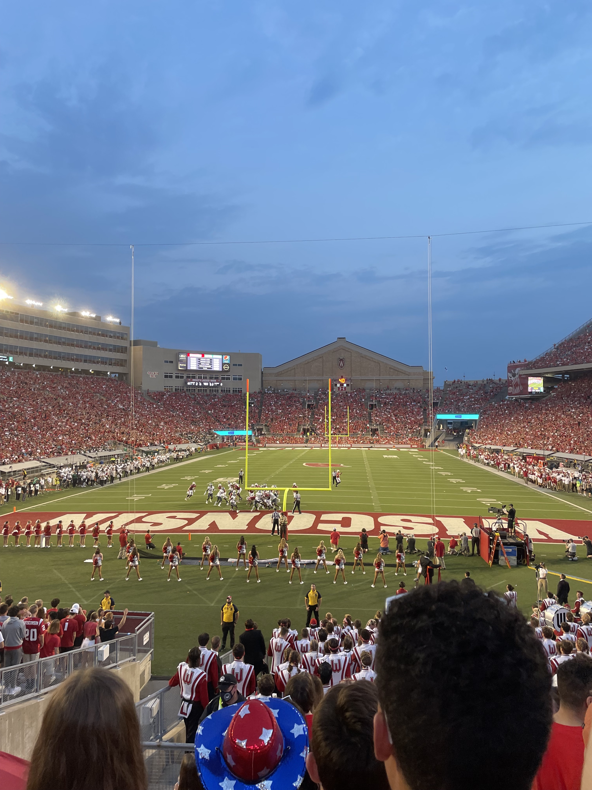
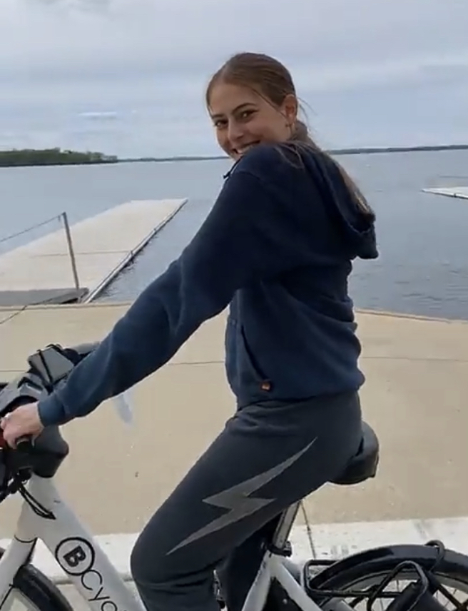

My favorite food is sushi. I love spicy tuna rolls most.
My favorite food is sushi. I love spicy tuna rolls most.
My favorite ice cream flavor is "Half Baked" from Ben & Jerry's.
My favorite candy is 100 Grand
I love baking! Especially cakes for birthdays and events.
My favorite thing at this school is football season.
My favorite thing to do in Madison is bike on the Lakeshore Path.
